Assignment #1- MSDS 411 Summer 2018
Andrew Knight
Introduction
My complete work for this assignment can be found in the Jupyter Notebook file
411_Assignment_1_Knight.ipynb. All reference to the ‘notebook’ below refer to my work in this Jupyter
Notebook file. The file 411_Assignment_1_Knight_Notebook_Printout.pdf shows all code and output.
In this assignment, we seek to build a predictive model using linear regression to predict the number of
wins for each baseball team in the test dataset. The model will use the independent predictor variables
and the dependent response variable ‘TARGET_WINS’ from the training dataset.
Data Exploration (EDA)
My goals for EDA focused on a few key areas. First, as with any EDA, I took some time to familiarize
myself with the datasets. Several steps within the notebook dealt with understanding the structure and
potential issues with the datasets. First some high-level basics.
There are 2276 records in the training dataset and 259 in the test dataset. Each observation (row)
represents a single team for a whole season. There are 15 columns of independent variables and a
response (TARGET_WINS) that can be used to build a predictive model. However, information that we are
not given is which team is represented for each record, how many games were played that season or how
many teams are represented for each season. There are 135 years represented in the data which we will
use as the assumption that this is the number of seasons (ignoring war years and player strikes), dividing
the records by 135 we get an average of 17 teams represented.
All variables were given as continuous numerics. Six of the 15 variables contained sme NaN values which
had to be corrected. NA (null or NaN) values were initially replaced with zeros. Some of these would need
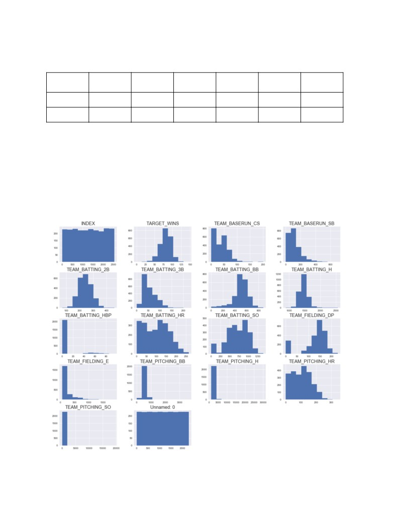
to be further modified later. The six variables containing significant numbers of NA values for both
training and test sets are given in the table below.
TEAM_BATTIN
TEAM_BASERU
TEAM_FIELDIN
TEAM_BATTIN
TEAM_PITCHI
TEAM_BASERU
G_HBP
N_CS
G_DP
G_SO
NG_SO
N_SB
Train
2085
772
289
102
102
131
Test
240
87
31
13
13
13
After checking mean, median and standard deviation for each, I saved the resulting data frame (with NaN
values replaced by zeros to new data frames named train1 and test1. I checked the distribution of each
variable provided and immediately began looking for things that could cause issues in my models. I
started by looking at the minimum values (which for several variables was now zero) due to the fillna
function used early on. Looking at a histogram of each I could tell when there were many ‘missing’ values
that had been filled in a zeros. Two particularly high offenders in this area were TEAM_BATTING_HBP and
TEAM_BASERUN_CS. Both of these had a high percentage of null values and as such I decided not to use
either of these two variables in my models.
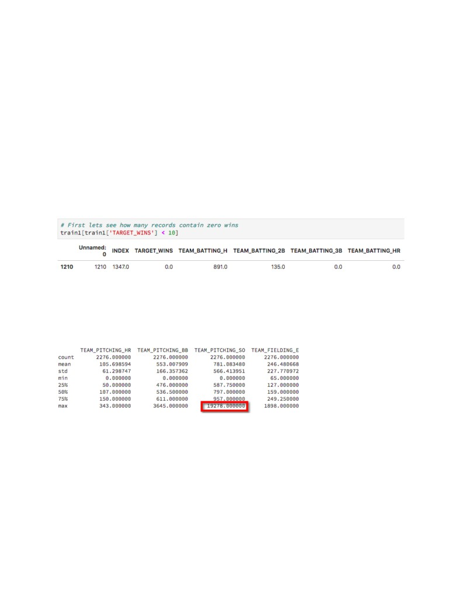
I also noticed some other opportunities to prepare these data for use in the model building process by
applying transformations to several variables. For example, the histogram for some variables show they
may be good candidates for a log transformation. These include variables like the TEAM_BASERUN_SB
and TEAM_FIELDING_E. These transformations will be listed in detail below.
We also clearly see other variables have many zeros that need to be addressed because the are
significantly skewing the data. This is a result of replacing NA values with zeros. Data cleaning described
in the next section will handle this issue so that the resulting models perform better without removing
rows of data.
Next, I focused on a the response variable. The distribution shows close similarity to normality and there
are no NA values, and the mean, standard deviation, and max values all seem reasonable given basic
knowledge of baseball. However, the min value displayed raises a flag. One single data point in the
training set contained zero TARGET_WINS, which even in a short season of the 1800s, seems suspect.
While the team was clearly bad with 24,057 TEAM_PITCHING_H and 1890 TEAM_FIELDING_E, ending a
season with zero wins can’t be accurate. I decided to remove this record only because I did not trust the
validity of this observation. It was the only observation (row) that I completely removed.
Then using the describe() function, I noticed some extreme outliers in the training data. The
TEAM_PITCHING_SO has some particularly high outliers (an order of magnitude higher than third
quartile), as high as 19, 278 (shown in output below) when the mean value is 781. I decided to impute the
outlier values with max values of three times the mean as a max value rather than replace them with the
mean value.
Many of the other variables that had null values replaced with zeros showed significant skew in their
distributions due to these values. Looking through these variables, it became clear that when taken in
context of a typical full season, the numbers simply did not make much sense when a little knowledge of
baseball is applied. For example, team stats for a whole season with zero home runs, zero pitching
strikeouts, zero batting walks, and others just doesn’t make sense even for shorter seasons in the past.
This is where more data would have been helpful such as actual number of games played in the season
or perhaps an indicator about invalid data. However, given that my choice was to limit the number of
observations that I am simply ‘throwing out’ was one of my primary objectives. So instead, I was forced to
estimate the values. I chose to use the overall mean to replace them. The calculations in the notebook
indicate exactly which were modified and how.
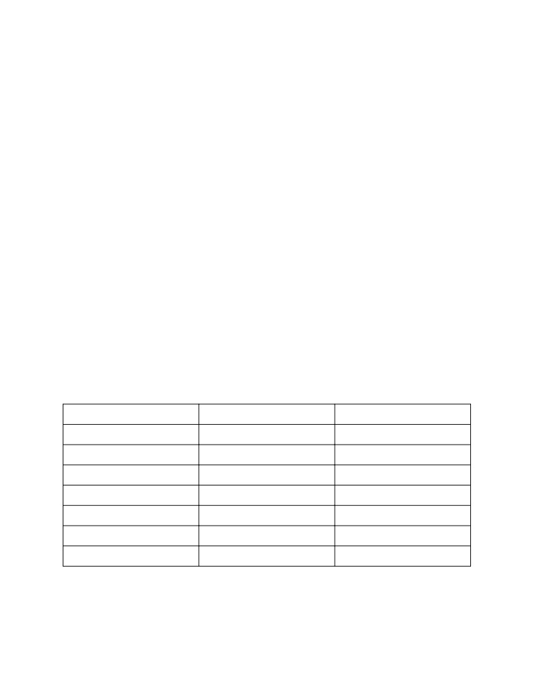
The other reason I did this was that based on initial analysis it seemed a log transformation may be useful
for some predictors. As such, I wanted positive non-zero values to use for the np.log function.
I also tested creating a few new variables, both for clarifying given variables and for performing
transformations to test in my model building process.
Because TEAM_BATTING_H (hits) includes singles, doubles, triples and home runs, I chose to create a
new variable for singles by subtracting the other given values for HR, 2B, and 3B from it to arrive at the
number of singles. I thought it would be better to have control over each metric separately during model
selection.
I also tried creating a few variables for to test performance using LOG and SQRT of several predictor
variables and the response in the training set. While the log-transformed variables improved several of my
predictive models (using R-squared, AIC/BIC, etc) they did not seem to improve my submitted data score
for the criteria in Kaggle.
Data Preparation
My data preparation for model testing was completed over many iterations. After checking for outliers of
each of the variables, checking linearity, and normality assumptions using various plots shown in sections
2 and 3 in my notebook, I proceeded to testing models. With each model I typically referred back to the
assumptions and when required performed additional tests moving between EDA, data preparation and
model building with each iteration.
For the data preparation section I was primarily interested in addressing outliers, checking linearity and
normality assumptions for my linear model and creating additional variables. First, I reviewed outliers.
For the extreme outliers on the high end, I found several variables with data points exceeding three times
the mean. Excluding the variables TEAM_BATTING_HBP and TEAM_BASERUN_CS which I had already
determined lacked enough meaningful data points, the following variables had the highest number of
extreme outliers.
Variable
Mean
Number of Outliers > 3x Mean
TEAM_FIELDING_E
246.48
102
TEAM_BASERUN_SB
117.58
63
TEAM_PITCHING_H
1779.21
37
TEAM_PITCHING_SO
781.08
7
TEAM_PTICHING_BB
553.01
6
TEAM_BATTING_3B
55.25
5
TEAM_PITCHING_HR
105.70
3
For these outliers, I decided to trim the max values to limit the values to 3 times the mean value. I
replaced each value higher than this number with the value equal to the 3 times the previous original
mean, shown in table above.
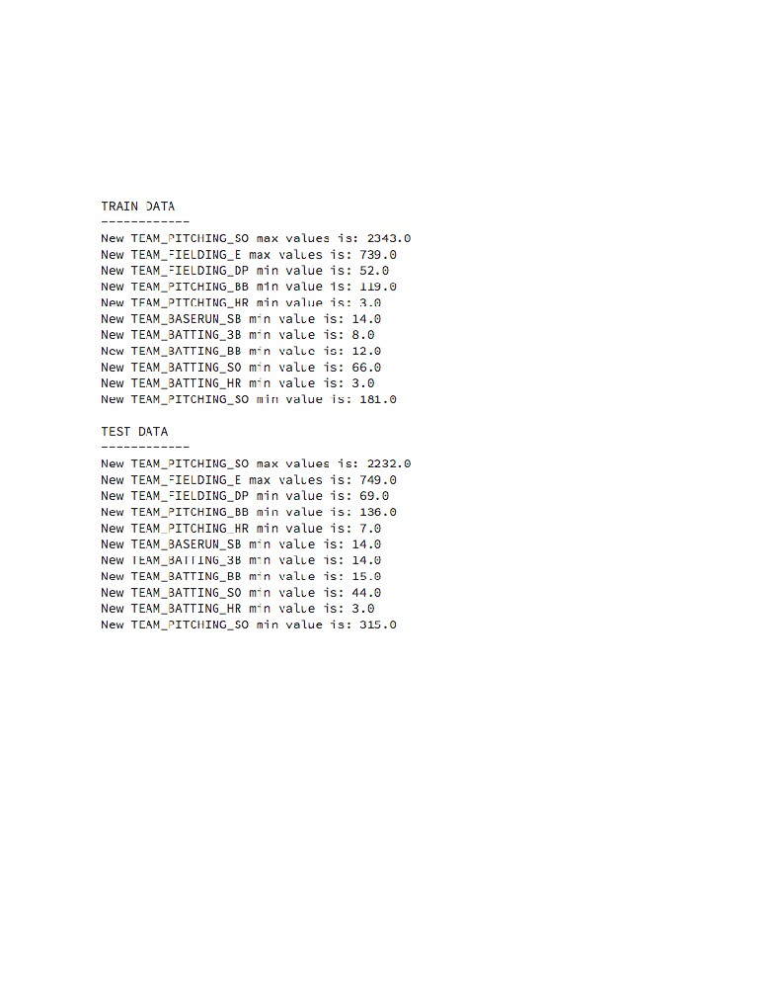
Next, I considered the zero values that were created for each variable to replace the NAs as an outlier on
the low end. Because of the fact that several variables contained many zero values, the overall linear
relationship was skewed on the low end. For the zero values in each, I made a decision to replace all zero
values with the original mean value. This was done for both the training and the test sets. Afterwards, we
have the following min values for each.
The new descriptive stats are given for each variable with the cleaned data.
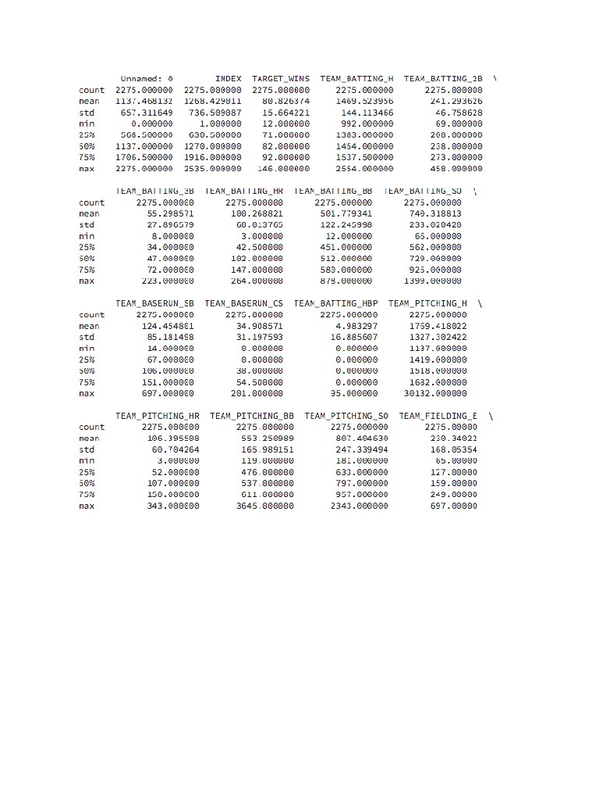
I also plotted the partial regression line for each variable against the response TARGET_WINS to check
the linear relationship. I verified that variables associated with positive influence on wins like team batting
hits as shown below showed a strong positive trend. More details for this were performed in the model
building section that follows.
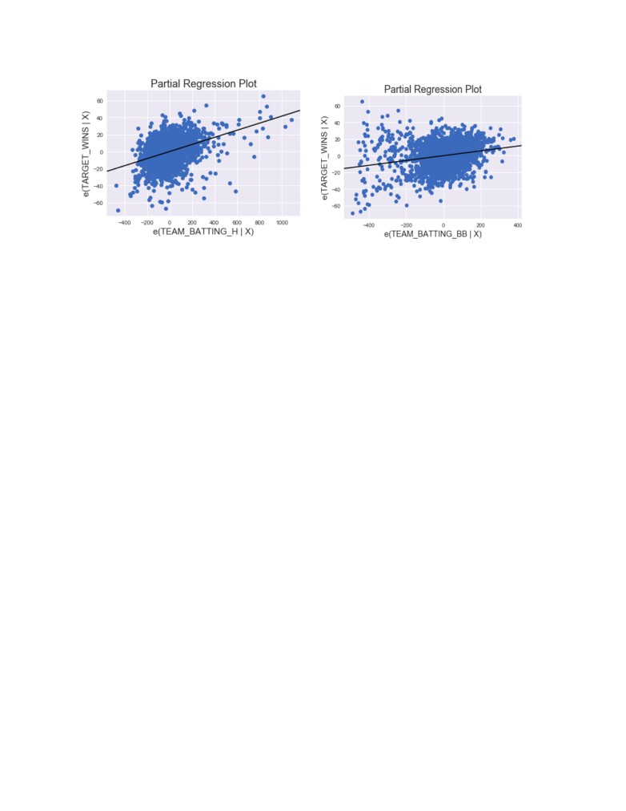
Finally, I considered new variables before moving on to the model selection process. Because many of the
distributions provided in the training dataset did not closely resemble normality, I thought introducing
log-transformed variable may help. I was especially interested in testing log-transformed variables for the
team baserun and team pitching variables because these were so highly skewed due to the many low
values shown in the histogram plots above. In addition I also tried created a new variable just for singles
from the hits variable. I really focused on utilizing the log values to try to get a closer approximation to the
normal distribution, however this did not ultimately increase my final score of my model in Kaggle. All new
variables added to both training and test datasets can be found in the notebook. Partial regression plots
were done as well to compare with the OLS regression summary. With each new variable test, I compared
the P values for each coefficient as well as the overall F-statistic to determine statistical significance.
Build Models
The first thing I did for the model building process was write a function to be able to quickly build and
analyze the model from a single string definition. I could then define a list for the exact variables I wanted
to test for each iteration and run each test without a code change. I kept a record of each trial run by
defining new variables for each test to correspond with the resulting output data file to be scored in
Kaggle. I then used the smf.ols() function from the statsmodels package to fit the full model and view the
results summary for each trial.
I employed a few different methods for building and testing the models. The full list of all models tested
and submitted can be found in my notebook file. First, I programmed a way to build the model string that I
wanted to test so that it could be broken down into individual components. To test different models, I
simply had to provide the full model string and use the cells below it to perform analysis on the full and
reduced models. The primary metrics used for determining the accuracy of the model were Adjusted
R-Squared, AIC and BIC values. The statsmodel package was used to quickly perform the calculations and
provide a table output of the summary. To compare different models I started with the Adjusted
R-Squared values provided for each model string to determine the relative accuracy of the model.
However, I also chose to use AIC and BIC with a step-wise iterative approach to determine which predictor
variables gave the best fit. Because AIC will continue to get smaller as I add variables, I used BIC to
penalized overly complex models with too many variables. The combination of the lowest AIC and BIC
scored gave me insight as to which specific variables gave the best performing model.
The first metric I was looking for in each was the p-value to determine the statistical significance of each
coefficient included in the model. When comparing each variable for a given trial model, the first thing I
looked as was the p-value to determine if the data given in that variable provided enough statistical
significance to be considered as a reliable predictor of the response. A p-value of less than 0.5 indicates
the variable is statistically significant so I started by removing variables like TEAM_PITCHING_SO and
TEAM_BATTING_SO which gave p-values of .9 or higher. This indicates the t-test for the error between the
observed and the predicted values failed. However, as I found after running several trials the resulting
p-values changed depending on the variables included in the model. So, we also need to look at the
relative fit of the model using the R-squared value.
The r-squared value provides a metric to determine the accuracy of the model. For the model I ultimately
submitted, the R-squared was 0.220 and the Adjusted R-squared was 0.216. I found that when I used
models that used the log-transformed variables I saw a higher R-squared value in general. For example, by
modifying only the three TEAM_PITCHING_ variables in my same model as my selected, I saw the
R-squared and Adjusted R-squared values increase to 0.232 and 0.228 respectively. However, I noticed
that my public score in the Kaggle competition decreased as a result of using the log-transformed values.
After trial several variations without a decreasing score I decided to omit the log values in my models
altogether.
The next metric I reviewed with each trial was the skewness and kurtosis. These are useful to determine
the relative location and variability in any model. We generally want to see skewness around zero and
kurtosis near 3 and again I noticed the log-values tended to perform better in this regard. I noticed that for
most of the models I tested, the values for these were not significantly impacted by the inclusion or
exclusion of one or two variables.
Finally, in each linear regression result obtained for a given trial model, I was interested in the AIC and BIC
values reported in the summary. I wanted to use this information to determine how many variables as well
as which variables to include in my model.
I search for an R-like package that would given me a step-wise forward selection process that compared
AIC and BIC values at each step to determine the right set of variables. Finding no such package for
Python I tried to write my own. My function stepwise_fwd_selection was used for this. I included BIC
because I know that AIC will continue to increase as we add more variables and concluded that finding
the point where BIC values began decreasing should offer clues about stopping point. So for example in
my model that included the following predictors:
TARGET_WINS ~ TEAM_BATTING_HR + TEAM_BATTING_2B + TEAM_BATTING_3B + TEAM_BATTING_BB
+ TEAM_FIELDING_DP + TEAM_PITCHING_SO + TEAM_BATTING_SO + TEAM_BASERUN_CS +
TEAM_FIELDING_E + LOG_TEAM_PITCHING_BB + LOG_TEAM_PITCHING_H + LOG_TEAM_PITCHING_HR
I obtained the following printed results indicating that I should try a model without the last
LOG_TEAM_PITCHING_HR variable. The counts listed at the end give the max values for R-squared (11),
AIC (11) and BIC (10) respectively. If BIC max value is less than AIC, it indicates my model is being
penalized for being more compless. In other words, more variables may not be a good thing despite the
higher R-squared value and I should try fewer, or different variables.
The next portion of my tests in the model building process followed the R-like plots of the OLS regression
plots. These were done to verify model assumptions. The first was a plot of the residuals versus fitted
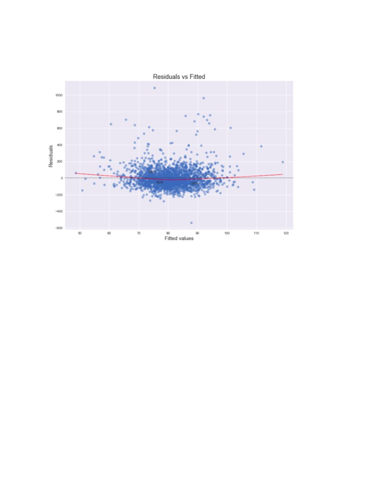
values for individual single variables used in my model. While it can be time consuming to check many
variables one by one, it was useful to verify the residual plot. For example, the TEAM_BATTING_H plot is
shown here.
The next plot that is useful to check is the Q-Q plot of the normalized residuals shown below. This is
useful for validating the common distribution assumption and for observing the ‘tail behavior’ to see
effects. Here is the Q-Q plot for the same model.
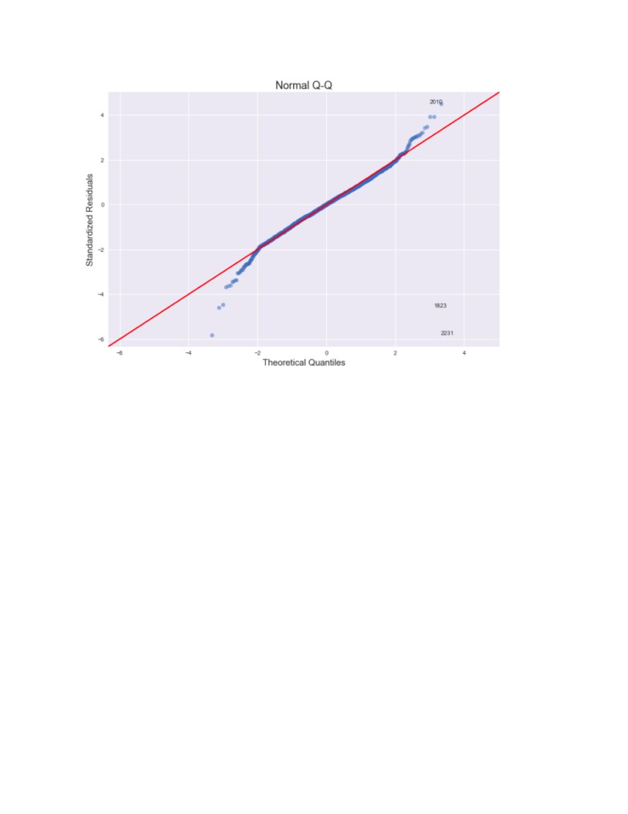
The third visual item that was checked is the Scale-Location plot. Similar to the residuals plot, here again
we are looking for any patterns that would indicate these residuals do not come from the normal
distribution. The ideal plot shows uniform residuals versus fitted values. This is shown below.
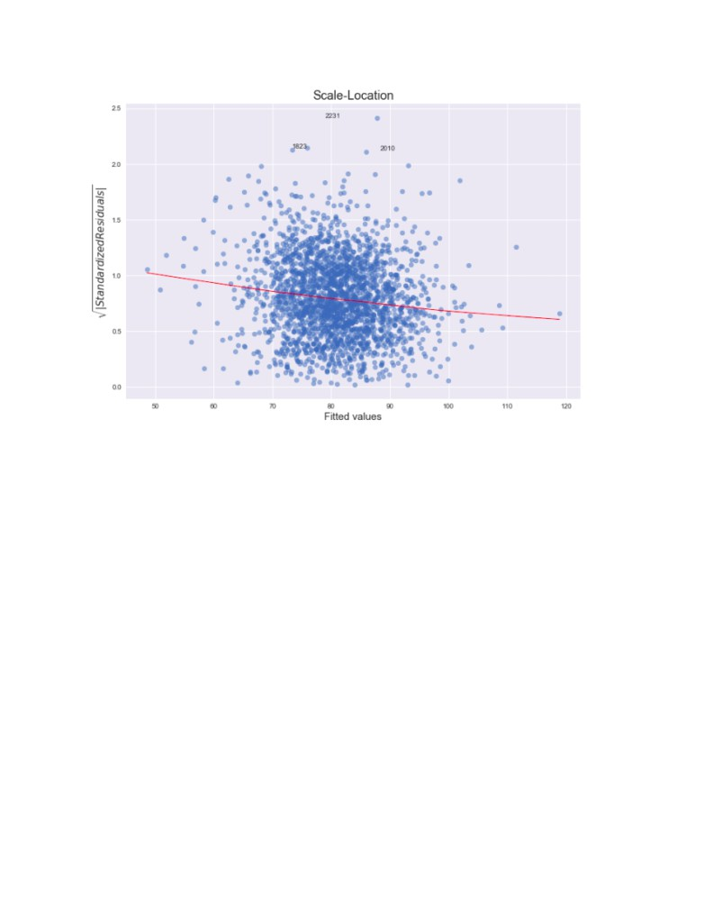
Finally, the fourth item useful for validating model assumptions is the leverage plot. This shows the
residuals versus leverage to detect the ‘pull’ of outliers within the data. The Cook’s Distance values can be
used to determine any outliers that have too much leverage on the resulting fit. This is shown below.
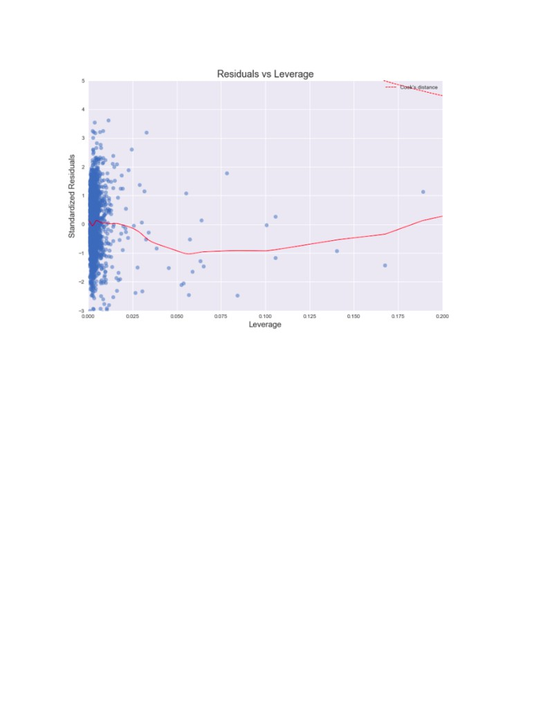
Throughout the model building and validation process I ran several visual analyses similar to the output
provided from the lm() function in R, which I had used in the past to validate model parameter selection.
Using the four primary components of this aside from viewing the model results summary were the
Residuals vs Fitted Values plot, the Q-Q Plot, the Scale-Location plot, and the Leverage and Cook’s D plots
show in the notebook output. Ultimately, these are all just tools to determine the best model and the
ability of that model to accurately predict the response. The linear model summary for the final model
used is given here.
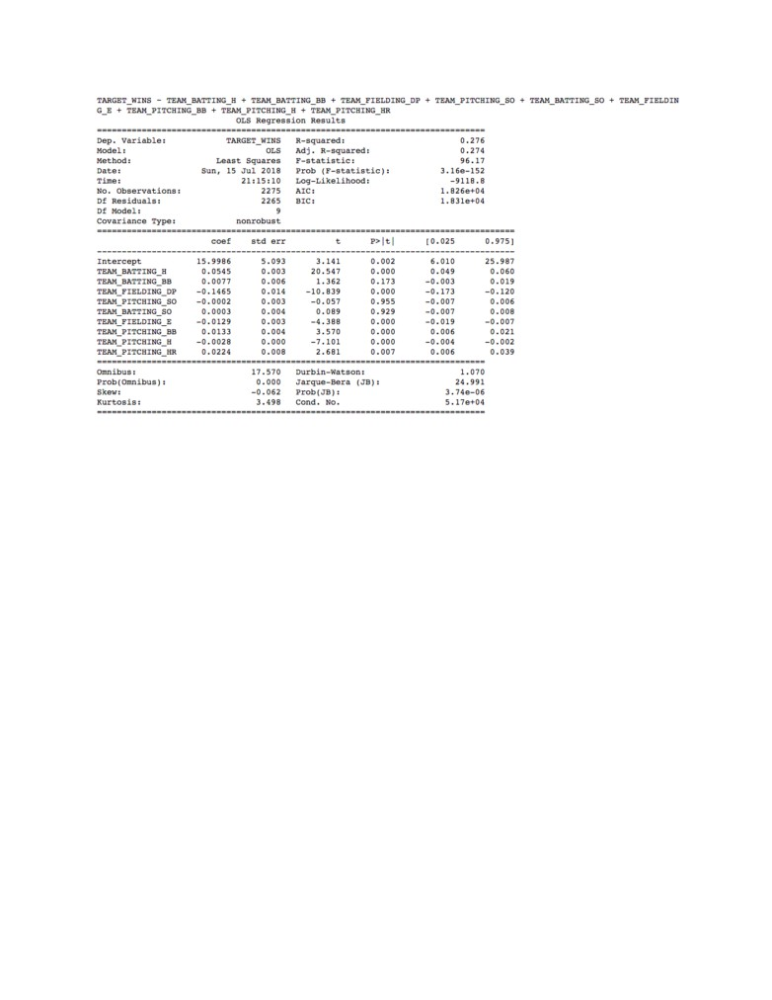
Select Model
The model I ultimately selected was one of the simpler models based on the performance score in
Kaggle. This ended up being one of my first models submitted. This model was used for submission #3
with a public score of 13.2. The final model string is as follows.
'TARGET_WINS ~ TEAM_BATTING_H + TEAM_BATTING_BB + TEAM_FIELDING_DP + TE
AM_PITCHING_SO + TEAM_BATTING_SO + TEAM_FIELDING_E + TEAM_PITCHING_BB +
TEAM_PITCHING_H + TEAM_PITCHING_HR'
Based on the summary table above this full model could be written as,
TARGET_WINS = 15.9986 + 0.0545 * TEAM_BATTING_H + 0.0077 * TEAM_BATTING_BB - 0.1465 *
TEAM_FIELDING_DP - 0.0002 * TEAM_PITCHING_SO + 0.0003 * TEAM_BATTING_SO - 0.0129 *
TEAM_FIELDING_E + 0.0133 * TEAM_PITCHING_BB - 0.0028 * TEAM_PITCHING_H + 0.0224 *
TEAM_PITCHING_HR
While this formula is mostly intuitive, a couple components are a little odd like the negative coefficient
value on team fielding double plays and the positive value on the team pitching home runs. Most
coefficients showed positive values that would be expected based on things that contribute to good
baseball, like hits, walks and good pitching. But a few seemed the opposite as expected such as positive
values for things that contribute to bad baseball like bad pitching and bad defensive fielding. The model is
relatively simple using nine predictors out of the possible 15 and without employing transformations. As
compared to other models the AIC and BIC values of 18,260 and 18,310 were respectively lower and the
R-squared value of 0.276 is reasonably high as well.
The independent variables were chosen to based on various tests performed in EDA and model validation
test. First, the variable TEAM_BATTING_H showed a strong positive relationship to the number of
TARGET_WINS and due to the fact that it includes all hits (singles, doubles, triples and home runs), I
chose to simplify the model and use this over separating out the individual elements and risk
multicollinearity issues by overlapping variables that were highly correlated in their contributions to the
response variable. Also, after trying log- and sqrt-transformed variables on both predictors and the
dependent response variable, these results showed that transforming the variables generally did not
improve my performance. This was all surprising as many of the tests I performed which I thought would
help improve the score did not. For example, standardizing data, imputing extreme outliers, taking actions
to improve collinearity and transformations of the predictors all did not seem to provide a significant
improvement.
Scored Data File
The final scored data file that had the best overall score ended up being andrew_knight_predictions3.csv
on Kaggle. It is also included in the final submission files for the assignment in Canvas.
Conclusion
In conclusion, I enjoyed this assignment and the practice of performing the EDA, Data Prep and Model
Building process. I would have liked to have seen a better improvement in the public score on Kaggle
based on the many tests in my analysis. The Jupyter Notebook file should show the depth of the analysis
that went into my final result and much effort went into clearly explaining my approach, calculations and
graphical results throughout.